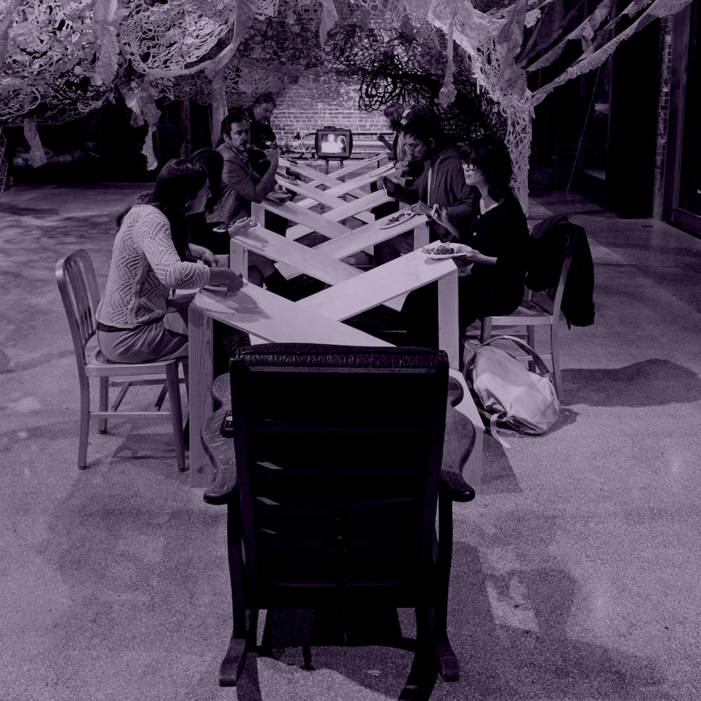
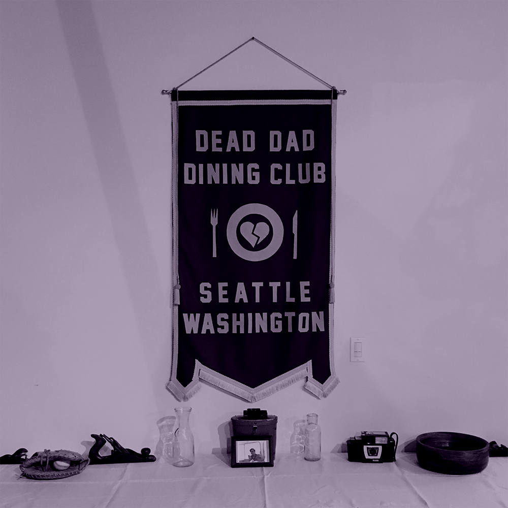

"We Are What Eats Us", Eric John Olson and Special Guests
"We Are What Eats Us" is a series of public meals that explore fatherlessness through reenactment and embodiment. Weekly dinners will be hosted and prepared by participants who have experienced the passing or absence of their father. They will cook a sitdown dinner based on a meal that reminds them of their dad. All the recipes will be compiled and published as a collection of poems. Dinners are free and open to the public with a reservation, please use the links above to RSVP.
PAST PUBLIC MEALS
- Oct 5, 7PM - "We Are What Eats Us", Eric John Olson with Jessica Olson
- Oct 12, 7PM - "Elegy breaking the fast: Yom Kippur bbq" with Norah Kates
- Oct 21, 5PM - "Last Meal", Anne Blackburn
- Oct 29, 1PM to 5PM - "Apple Pie Social", Gail Grinnell
- Nov 2, 7PM - TBA, Saralee Coleman & Rachel Ravitch
- Nov 6, 11AM, "Dad Pancakes", Paulette Perhach
- Nov 13, 6PM - "How to stir fry a park", Leah Gerrard
- Nov 22, 7PM - "Ashes to Ashes", Timothy Firth
- Nov 30, 7PM - "Footlong Chili Cheese Dog / Cherry Limeades (Sonic)", Michelle Peñaloza

